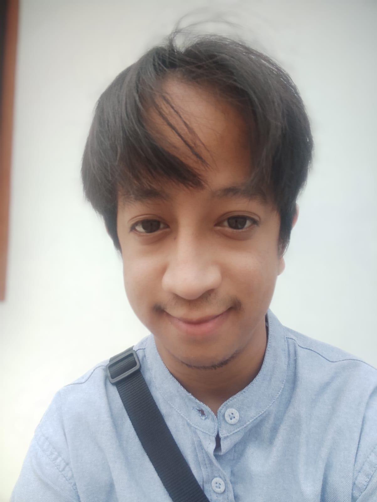

Naelul Kirom
Web Developer | Sistem Informasi | Teknologi Informasi
Informasi Kontak
Email:
naelulkirom@gmail.com
Telepon: 0895328620093
Alamat: KP Panyawungan, Bandung
Keterampilan
HTML, CSS, JavaScript
React, Node.js
PHP, MySQL
Desain UI/UX
Adobe Photoshop, Illustrator
Komunikasi dan Kolaborasi Tim
Pendidikan
Sarjana Sistem Informasi
- Masoem University, Tahun Lulus: 2024
Pengalaman Kerja
Web Developer Intern
- PT. Teknologi Digital (2023 - Sekarang)
Pengembangan dan pemeliharaan website menggunakan HTML, CSS, JavaScript, dan React.
Berkolaborasi dengan tim desain untuk membuat tampilan website yang responsif.
Freelance Web Developer
- Proyek Mandiri (2022 - 2023)
Membuat website untuk klien dengan desain responsif dan fungsionalitas yang sesuai dengan kebutuhan mereka.
Menangani pengembangan backend dengan PHP dan MySQL.